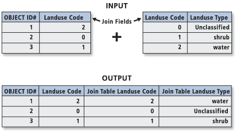
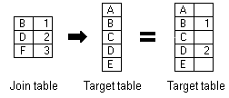
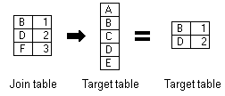
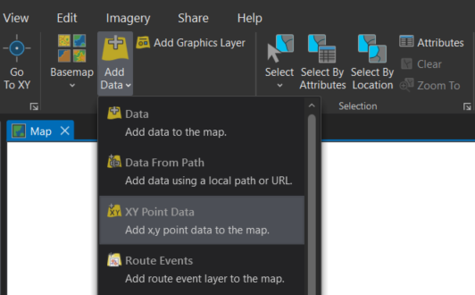

Join, spatial join
Basic terms
Through a common field, known as a key, you can associate records in one table with records in another table. For example, you can associate a table of parcel ownership information with the parcels layer, because they share a parcel identification field. You can make these associations in several ways. Joins can also be based on spatial location.
Joins information are stored in the layer's properties, so they can be applied only to tables that are opened from a map or scene. To access join information, right-click the layer and click Properties to open the Layer Properties dialog box, and click the Joins tab.
Resources:
Join the attributes from a table
Typically, you'll join a table of data to a layer based on the value of a field that can be found in both tables. The name of the field does not have to be the same, but the data type must be the same; you join numbers to numbers, strings to strings, and so on. You can perform a join using the Add Join geoprocessing tool. When performing an attribute join, the joined fields are dynamically added to the existing table. Field properties (such as aliases, visibility, and number formatting) are maintained when a join is added or removed.

Note
When joining tables, the default option is to keep all records. If a record in the target table doesn't have a match in the join table, that record is given null values for all the fields being appended into the target table from the join table.

With the keep only matching records option, if a record in the target table doesn't have a match in the join table, that record is removed from the resultant target table. If the target table is the attribute table of a layer, features that don't have data joined to them are not shown on the map.

Join data by location spatially
When the layers on your map don't share a common attribute field, you can join them using the Spatial Join geoprocessing tool, which joins the attributes of two layers based on the location of the features in the layers.
With a spatial join, you can complete any of the following common workflows:
- Find the nearest feature
- Find what is inside a polygon
- Find what intersects a feature
Join by location, or spatial join, uses spatial associations between the layers involved to append fields from one layer to another. Depending on the type of association, you can append the attributes or an aggregate (minimum, maximum, mean, and so on) of numeric attributes from a matched feature to the target features. Spatial joins by default are different from attribute-driven joins in that they are not dynamic and require you to save the results to a new output layer.
Remove join
To remove a join, use one of the previously mentioned methods to access the Joins menu items, and open the Remove Join tool. You can use the menu on an open attribute table, the Data tab for a layer or stand-alone table selected in the Contents pane, or the Joins and Relates context menu.
From the Joins menu, you can also choose to remove all joins. This command asks you to confirm the action, because you cannot undo removing all joins.
Workflow
Add XY data
Open a new Excel sheet and create a simple table containing these columns: ID, Name, Lat, Lon. Lat and Lon stands for latitude and longitude in decimal degrees. Then fill in at least 5 world cities which you visited (if possible, try to choose cities from different countries). When finished, save the table as a CSV file (UTF-8 coding).
In new ArcGIS project, select Add Data and choose Add XY Point Data. In dialog box, define the path to your saved CSV table, X and Y fields and coordinate system.

Perform spatial join
Download prepared data, which include a geodatabase and a shapefile. Connect the geodatabse to your project and add country polygon feature layer to the map.
Let's say, that you desire to enrich your point data with country name and country code. Thus could be done via spatial join: right-click point layer and select Joins and Relates and choose Spatial Join. Define the target data to be joined spatially, choose the attributes and confirm. This should give you a new output layer combining city and country information.
Attribute-driven join
In this part, we will enrich the country polygon layer with some statistical tabular data from Eurostat. Choose a topic you like in Eurostat website and open it. Before downloading data, select only the most recent period and in Format tab choose codes and labels as labeling option. Then download the data in XLSX format.
After succesful download edit the data: create a new list and copy&paste the desired data there (choose paste only values). Then save the new list as a CSV (UTF-8 coding). In ArcGIS project, right-click the country layer and select Joins and Relates and choose Add Join. Define the path to the exported CSV file which is the target table (join table is the country layer) and set country code as a Join Field. Keep only matching records and run Validate join. Double check if the number of rows is equal to the number of rows of the original CSV table from Eurostat. If so, perform the join and new data should appear in the attribute table of the country layer.
Supplemental exercise: